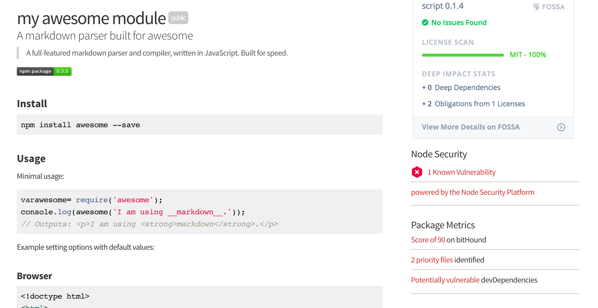
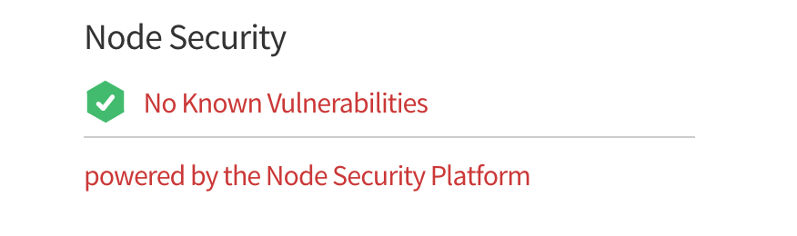
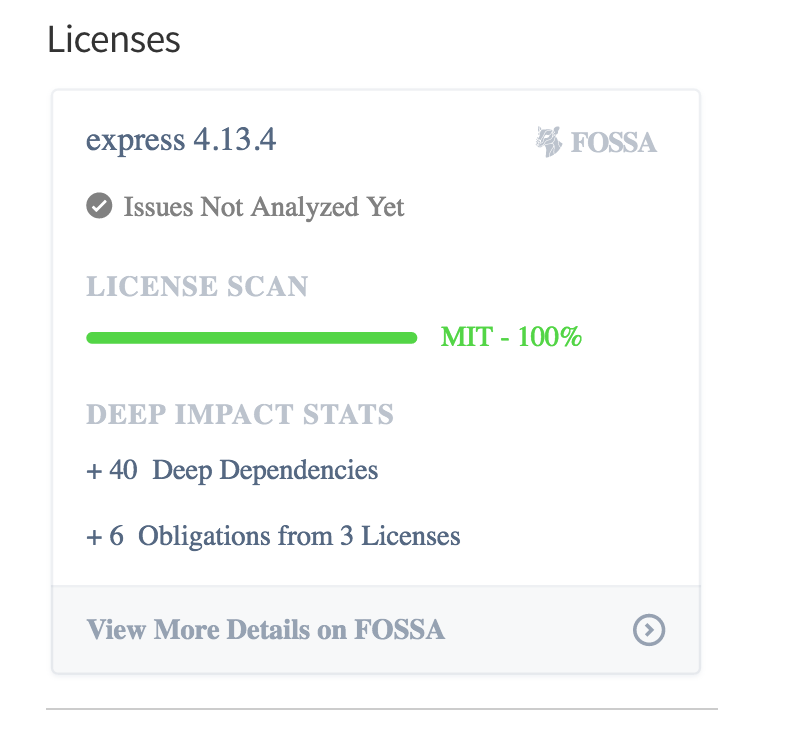
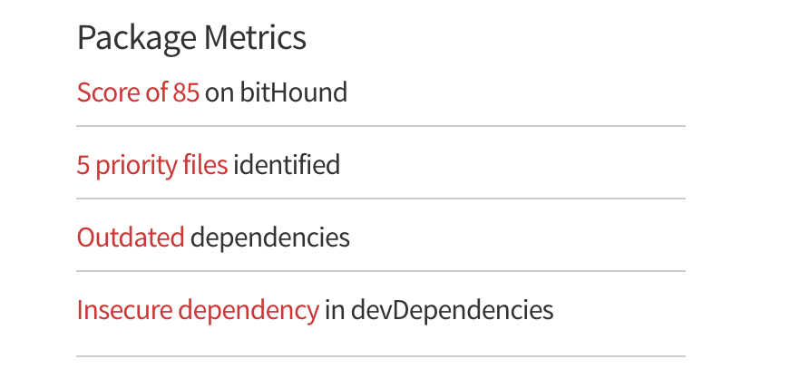

npm Enterprise Add-Ons
Add-ons allow third-party developer tools to integrate directly into npm Enterprise. This gives npm Enterprise powerful functionality, such as: vulnerability scanning, license auditing, and code quality analysis.
Installing Add-Ons
Add-ons are installed via the npme admin tool on your Enterprise server:
- SSH into your npme appliance.
- Run
npme addon <add-on-identifier>. - third-parties may require an additional step, such as verifying your email address.
That's all there is to it! Visit any package page in your npm Enterprise website:

Add-Ons Currently Available
Node Security
- Homepage: https://nodesecurity.io/
- Installation:
npme addon nodesecurity
The Node Security team audits modules that Enterprises depend on and then surface security information in the Node Security Platform. For years, the nsp tool has been a pivotal source of intelligence on vulnerabilities in Node dependencies.
The npm Enterprise Node Security add-on provides this information in the sidebar of the module detail page. By clicking the sidebar, a user receives a more detailed description of the vulnerability.

FOSSA
- Homepage: http://fossa.io/
- Installation:
npme addon http://{fossa_host}/api/services/npm
FOSSA’s Licenses add-on proactively assesses both public and proprietary packages in npmE registries to identify licensing issues and obligations. npmE users will be able to view an at-a-glance summary of a package’s licensing impact online before deciding to download and integrate it into their products.
FOSSA runs as an appliance securely behind your firewall, contact support@fossa.io to get started with this add-on.

bitHound
- Homepage: https://www.bithound.io/
- Installation:
npme install addon https://www.bithound.io/npm/plugin.json
Once the bitHound add-on is activated (via email post-installation), you will start seeing bitHound package metrics and insights. This will show up on the right hand side where you're already used to seeing npm provided information.
This information provides valuable insight into the health of any open-source dependencies your company is building on top of.

Writing Your Own Add-On
Would you like to write an npm Enterprise add-on? send an email to support@npmjs.com.
npm Enterprise add-ons consist of two parts: a manifest that provides meta-information about an add-on, and a server that gets web-hooks posted to it from the npm Enterprise appliance.
The Manifest
The manifest contains the following fields:
- type: What type of add-on is this (currently
badge plusis the only option). - email: An email address of the add-on maintainer.
- name: a human-readable name for the add-on.
- homepage: A homepage URL for the add-on.
- description: A brief description of the add-on.
- callback: A callback to invoke during add-on installation.
- webhook: A webhook to invoke with package.json, as package pages are visited by users.
bitHound's manifest:
{
"type": "badge plus",
"email": "gord@bithound.io",
"name": "Package Metrics",
"homepage": "https://www.bithound.io",
"description": "Package Metrics powered by bitHound",
"callback": "https://www.bithound.io/auth/npm",
"webhook": "https://www.bithound.io/webhook/npm"
}The manifest should be available on a public URL, and is installed via:
npme addon https://manifest-urlThe Server
The server component listens for events posted to the webhook and
callback URL described in the manifest.
The callback URL receives access_token and email, the access_token
is used to sign future webhooks, using a signing scheme outlined here.
The webhook URL is posted a signed payload, representing the package
page that a user is viewing. A webhook returns a payload representing
the UI elements that should be rendered on the package page.
sample response:
{
"rows": [
{
"image": {
"text": "",
"url": "http://localhost:8081/static/images/tonicdev.ico"
},
"link": {
"url": "https://tonicdev.com/npm/nyc",
"text": "test nyc in the browser"
}
}
]
}Two sample servers are available as a point of reference:
- name: npm Top Users
- code: https://github.com/bcoe/top-npm-users-server
Displays a list of the top npm users contributing to a package, based on their download counts.
- name: Tonic
- code: https://github.com/bcoe/npm-tonic-app
Experiment with an npm module using Tonic.